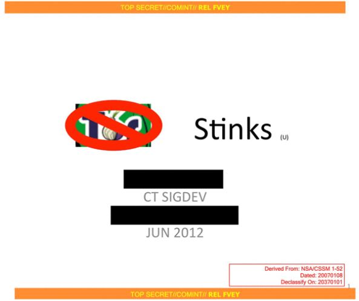
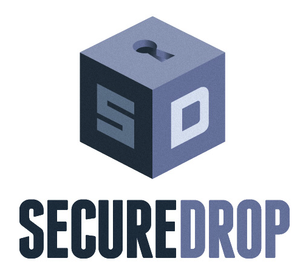
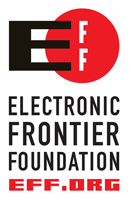
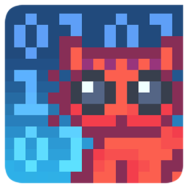

Support Privacy Projects
Tor Network
The NSA says "Tor stinks". Let's support the privacy network with a donation or by providing server capacity to the network.

Add Server to Tor Network
No worries, you can limit the traffic with a daily or monthly quota. The setup is less complicated than it seems.
## Use these to restrict the maximum traffic per day, week, or month.
## Note that this threshold applies separately to sent and received bytes,
## not to their sum: setting "4 GB" may allow up to 8 GB total before
## hibernating.
##
## Set a maximum of 4 gigabytes each way per period.
AccountingMax 4 GB
## Each period starts daily at midnight (AccountingMax is per day)
AccountingStart day 00:00
## Each period starts on the 3rd of the month at 15:00 (AccountingMax
## is per month)
# AccountingStart month 3 15:00
To add a simple relay, just open a single port (QRPort) in your firewall. The configuration is commented and explains everything. If you have unlimted bandwith open the DirPort as well.
To avoid that illegal activity of Tor users falls back to you, just let the ExitPolicy uncommented. This way your server will never be used as an exit node.
ExitPolicy reject *:* # no exits allowed
Donation
Accepted Payment Options: Credit Card, Amazon Payments, Dwolla, Bitcoin, Bank Transfer
Visit the Donation Page
SecureDrop
SecureDrop is an open-source whistleblower submission system managed by Freedom of the Press Foundation that media organizations use to securely accept documents from anonymous sources. It was originally coded by the late Aaron Swartz.
Any organization can install SecureDrop for free and can make modifications if they so choose. Check out our project page on GitHub for detailed installation instructions. Freedom of the Press Foundation also offers technical assistance to news organizations wishing to install SecureDrop and train its journalists in security best practices.

Donation
Accepted Payment Options: Credit Card, Paypal, Bitcoin
Visit the Donation Page
EFF
The Electronic Frontier Foundation is the leading nonprofit organization defending civil liberties in the digital world. Founded in 1990, EFF champions user privacy, free expression, and innovation through impact litigation, policy analysis, grassroots activism, and technology development. We work to ensure that rights and freedoms are enhanced and protected as our use of technology grows.
What you donation does: Protects fundamental rights through direct legal opposition to invasive search and surveillance. Creates privacy-enhancing tools like HTTPS Everywhere and Privacy Badger. Advocates for copyright and patent reform to promote rather than chill innovation. Fights for the free expression rights of bloggers, activists, and ordinary people around the world. * And supports all of EFF's work to protect rights in the digital world.

Donation
Accepted Payment Options: Credit Card, Paypal, Bitcoin
Visit the Donation Page
GnuPG
GnuPG allows to encrypt and sign your data and communication, features a versatile key management system as well as access modules for all kinds of public key directories. GnuPG, also known as GPG, is a command line tool with features for easy integration with other applications.
Maintaining and improving GnuPG is costly. For more than a decade, g10code GmbH, a company owned and headed by GnuPG's principal author Werner Koch, is bearing the majority of these costs. To help them carry on this work, they need your support. Note that despite GnuPG carries an FSF copyright notice, they never funded the development or hosting costs.
If you are using GnuPG, Libgcrypt, GPGME, or Gpg4win and would like to help with development and maintenance please consider to make a donation.

Donation
Accepted Payment Options: Credit Card, Paypal, Bitcoin (GnuPG account at the Wau Holland Stiftung only)
Visit the Donation Page
CryptoCat
Cryptocat is an easy to use encryption App for Browsers, Mac OS X and iOS. Keep the project going and donate.

Donation
Accepted Payment Options: Credit Card
Visit the Donation Page